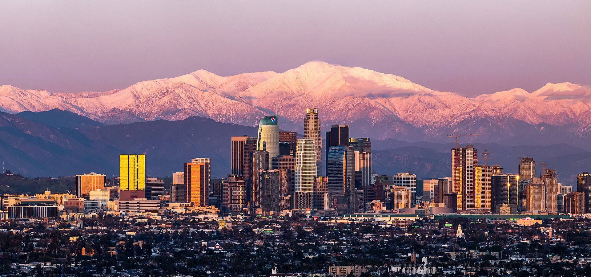

<!DOCTYPE html>
<html lang="en"></html>
<head> 
    <meta charset="UTF-8">
<meta http-equiv="X-UA-Compatible" content="IE=edge">
<meta name="viewport" content="width=device-width, initial-scale=1.0">
<title>History</title>
</head>
<body>
    <header>
        <H1>History about Los Angeles</H1>
    </header>
    <p>The Los Angeles coast was inhabited for centuries by the Tongva (also called Gabrieleños), the Chumash and other even older Amerindian peoples; perhaps for millennia. The first Europeans arrived in the area in 1542, led by Juan Rodríguez Cabrillo, a Spanish explorer who claimed the area as Ciudad de Dios on behalf of the Crown of Castile, but continued his journey without settling there. Angeles, like the entire state of California, was included in the mid-sixteenth century in the Viceroyalty of New Spain. On August 2, 1769, Gaspar de Portolá and the Franciscan missionary Juan Crespí arrived at the place where the city is currently located. Crespí noted that the site had great potential as a settlement site.1617
        Olvera Street. In 1771, another Franciscan friar, Junípero Serra, ordered the construction of Mission San Gabriel Arcángel, which is now known as Valle de San Gabriel.18 In 1777, the new governor of California, Felipe de Neve, recommended to the viceroy of New Spain that the site previously recommended by Juan Crespí be named a town. The city was founded on September 4, 1781 by a group of 44 people, with the name "El Pueblo de Nuestra Señora la Reina de los Ángeles de Porciúncula".19 The founders were of indigenous and Spanish origin, being two thirds parts of mestizo or mulatto origin; in fact, most were of African descent.20 It remained a ranch for decades, but by 1820 the population had grown to 650.21 The oldest remains of the city are preserved as a historic monument on Olvera Street, the oldest part of the city.</p>
        <div style="text-align: center;">
            <figure>
                
                <figcaption>This is a panoramic picture of the city, where the most important buildings appear</figcaption>
            </figure>
        </div>
    <p>Other aspects of the city</p>
    <nav>
        <ul>
            <li><a href="index.html">Main Page</a></li>
            <li><a href="people.html">People</a></li>
            <li><a href="monuments.html">Monuments of the country</a></li>
            <li><a href="toponomy.html">Toponomy</a></li>
        </ul>
    </nav>
</body>